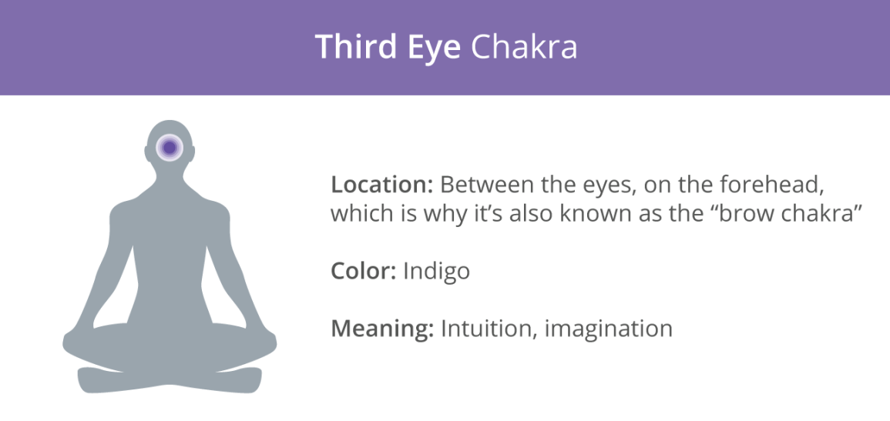
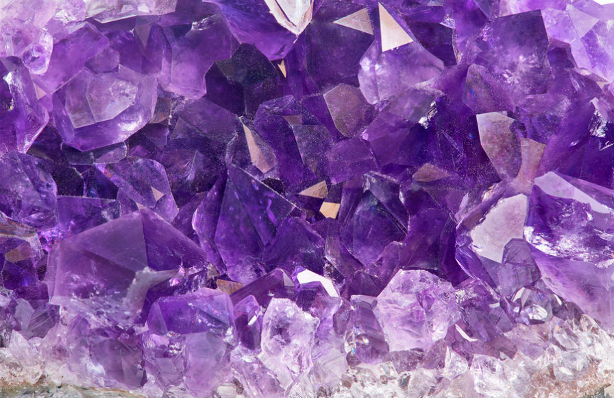
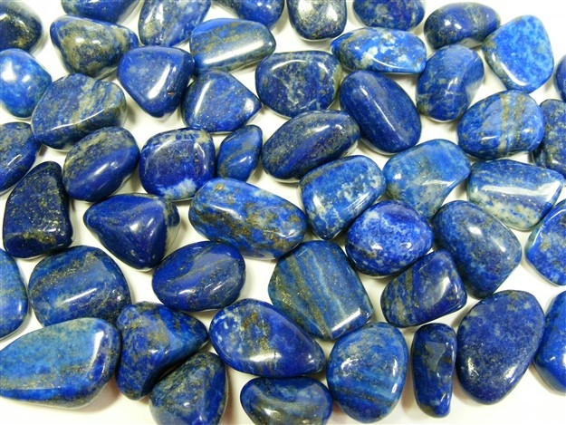
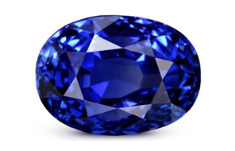

Third Eye Chakra

Image from https://www.healthline.com/health/fitness-exercise/7-chakras
The third eye chakra, located in the middle of the forehead, is associated with intuition, lucidity, meditation, and trust.
The main colour of the third eye chakra is indigo (dark blue + violet):
1. Amethyst

Image from https://blog.sivanaspirit.com/10-spiritual-benefits-amethyst/
Assists in:
- Meditation
- Spiritual awareness
- Intuition
- Mental clarity
- Relieving stress and anxiety
- Focus
- Creativity
- Psychic abilities
A powerful protection stone, Amethyst will relax our mind and lift our spirit.
It also improves dream recall, lucid dreaming, and astral projection.
2. Lapis Lazuli

Image from https://www.hehishelo.co.uk/Lapis-Lazuli-Tumble-Stone---Smaller/4930.htm
Assists in:
- Meditation
- Spiritual awareness
- Intuition
- Psychic abilities
- Lucid dreaming
- Astral projection
- Relieving stress and anxiety
- Luck
A protective stone that can help contact spirit guides, Lapis Lazuli recognises psychic blocks and returns the energy to its source.
It also opens up our psychic abilities, improving dream recall and acting as a guide through our spiritual journey.
3. Dark Blue Sapphire

Image from https://www.sapphiregemsstore.com/journey-of-gems-stone/
Assists in:
- Meditation
- Self-realisation
- Intuition
- Mental clarity
- Decision-making
- Self-expression
- Wealth
- Prosperity
A stone of wisdom and psychic activation, Dark Blue Sapphire allows us to access deeper levels of consciousness to stay on our spiritual path.
It also increases our intuition, awareness, mental clarity, and restores the energetic balance in our third eye chakra.
[Information adapted from https://7chakrastore.com/blogs/news/chakra-stones]